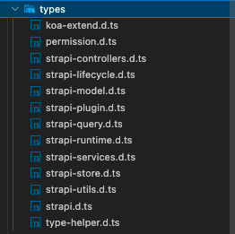
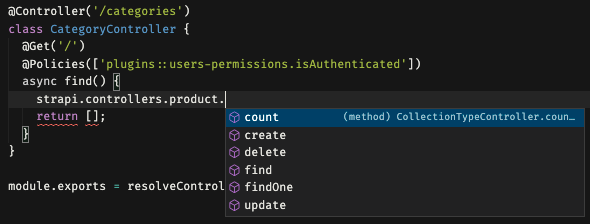
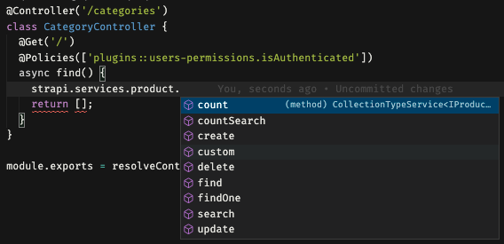

Features
Strongly typed
Strapi api
types for controllers
types for services

Http decorators
@Controller('/products')
class ProductController {
@Post('/')
@Policies(['plugins::users-permissions.isAuthenticated'])
async create(ctx: KoaAuthenticatedContext<ICreateProduct>) {
await strapi
.query('product')
.create({ ...ctx.request.body, user: ctx.state.user.id });
// ...
}
}
The above code will auto-generate a route configuration in routes.json. Same config in routes.json will be overriden.
{
"routes": [
{
"method": "POST",
"path": "/products",
"handler": "product.create",
"config": {
"policies": ["plugins::users-permissions.isAuthenticated"]
}
}
]
}
Path alias
Only @/ is supported. You could edit resolvePathAlias.ts for other path alias
import { IProduct } from '@/typings';
import { Policies } from '@/decorators/http';
Unit / E2e test
See the Test section
Schema
See the Schema section